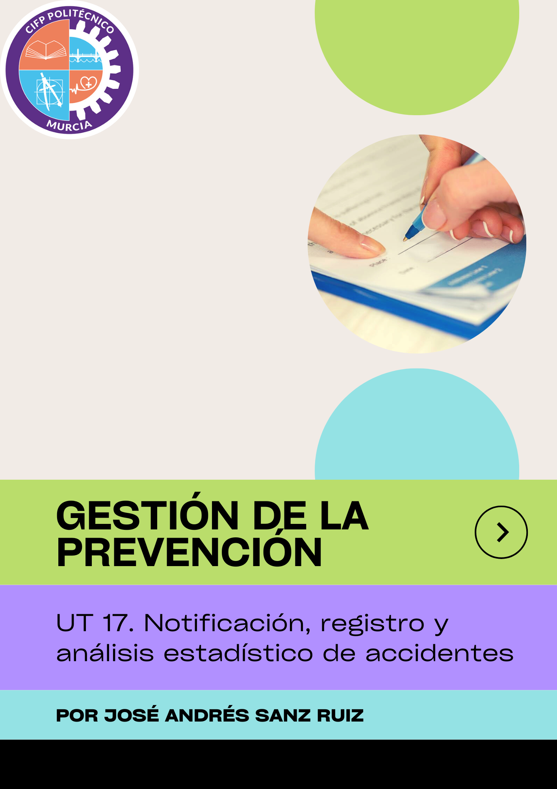
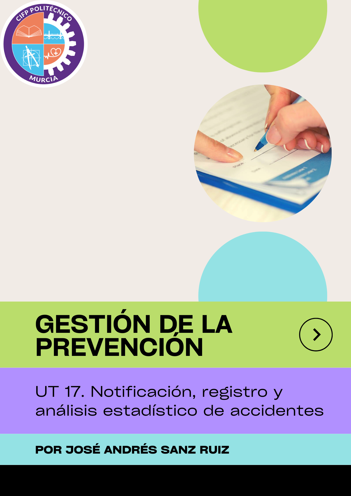

UT 17. NOTIFICACIÓN REGISTRO Y ANÁLISIS ESTADÍSTICO DE ACCIDENTES
UT 17. Notificación, registro y análisis estadístico de accidentes
Obra publicada con Licencia Creative Commons Reconocimiento Compartir igual 4.0

Obra publicada con Licencia Creative Commons Reconocimiento Compartir igual 4.0